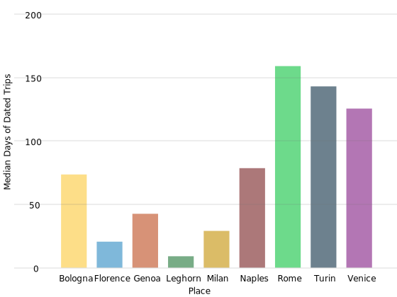
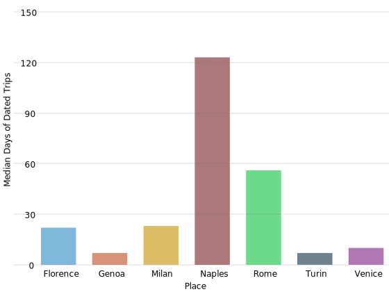

Melissa Calaresu
3. Life and Death in Naples: Thomas Jones and Urban Experience in the Grand Tour (Explorer)
3. Life and Death in Naples: Thomas Jones and Urban Experience in the Grand Tour (Explorer)
by Melissa Calaresu
Abstract
(Abstract missing)
The life of the Welsh painter, Thomas Jones (1742-1803, travel years 1776-83), is framed by the production of two portraits which together demonstrate the interlinked nature of Anglo-Italian cultural relations created by the Grand Tour, as the Grand Tour Explorer so clearly shows.
The first portrait, by Jones’ friend Giuseppe (or Joseph) Liberati Marchi (1735?-1808), was painted in 1768 when Jones and the artist were visiting Wales from London (Figure 1).1 The preeminent British portraitist of the late eighteenth century, Joshua Reynolds (1723-1792, travel years 1750-1752), had met the teenage Marchi on his tour of Italy and brought him back to Britain, where he worked as Reynolds’ assistant for more than forty years.
The second portrait of Jones and his family by Francesco Renaldi (1755-c.1790), also painted in Wales, was done in 1797, by which time Jones had spent seven years in Italy and had returned home to run his family’s estate. Renaldi was a British painter of Italian parentage who had trained and exhibited in London. He had also stayed with Jones in Naples for three months in 1781 and would later spend ten years working as a painter in Bengal, before returning to Britain and painting this and other portraits of the Jones family.2 Jones, Marchi and Renaldi were friends, and part of a network of painters with connections to the British Grand Tour in Italy. While Marchi (and even Renaldi, who was born in Britain) escaped the focused attention of the compiler of A Dictionary of British and Irish Travellers in Italy (compiled from the Brinsley Ford Archive by John Ingamells, 1997), Reynolds’ and Jones’ entries provide at least some mention of these two Anglo-Italian artists from which one can build a sharper picture of the interconnectedness and movement within the Explorer. These portraits of Thomas Jones frame a life which began and ended in Wales, but they hide the hybrid origins and cultural identities of this trio of painters, as well as the nature and depth of their lived experiences in Italy and beyond.
On 11 March 1783, Thomas Jones wrote: “I had been now for some time infected with the Swiss Malady and longed to see my Native Country once more.”3 After three years in Naples, Jones had had enough of his Italian experience and wanted to go home. He had failed to get enough commissions or find a powerful enough patron, British or Italian.4 Only a few weeks later, in early April 1783, did William Hamilton and his family by Francesco Renaldi (1755-c.1790) (1730-1803, travel years 1764-1800) the British emissary and chief “fixer” in Naples, finally agree to buy a large prospective view of the Campi Phlegrei (now lost) which Jones had almost finished.5 It was “too little, too late,” as Jones was determined to return to Britain with his family—his wife, Maria Moncke, a Danish woman who had been his housekeeper in Rome, and their two daughters (Anna Maria, b. 1780, travel years 1780-1783; and Elizabeth Francesca, b. 1781, travel years 1781-1783)—and they left for Britain a few months later in August 1783.6 The portrait of Jones’ family by Renaldi, painted after their return to Wales, shows the settled appearance of a prosperous Welsh landowner, belying Jones’ seven-year residency in Italy. Jones balances a palette, paintbrush, and painter’s mahlstick on one arm; there is a folder of prints in front of him and an unfinished landscape on an easel behind him. He looks away from his wife and daughters who are portrayed as models of provincial propriety and accomplishment (a self-portrait of Renaldi peers over the scene from the center of the canvas). Jones never returned to Italy; by the time of this portrait, his professional career as a painter was finished and he would devote the final years of his life to running his family’s estate, writing in 1798 that his life had become “with little interruptions, one uniform scene of domestick Retirement—at times, indeed, amusing myself with my beloved Art”, painting for his own amusement.7
For three years, Jones had lived at the center of one of the cultural capitals of Europe—attending the opera, taking day trips to Sorrento by boat, befriending Italian painters, and buying fresh peas from street vendors. His Neapolitan life can be found in the many sources that he left behind—his paintings of the city, his “Memoirs” cited above (based on a diary that he kept at the time at his side, now lost) and a full set of household accounts.8 None of this material is new; art historians, in particular, have used the “Memoirs” and accounts in their analysis of his paintings but few have analyzed these sources, both written and painted, together, as careful and evocative observations of urban life. His visual representations of Naples as a city, especially its buildings and urban spaces, are unique for this period and also for what looks like their abstraction and the absence of any people. Jones’ paintings of the city’s rooftops and spaces conform neither to the contemporary taste for ethnographic representations of Neapolitan street culture, made popular by painters such as Pietro Fabris, nor for the panoramic views of the city by his friend Giovanni Battista Lusieri.9 All of Jones’ Neapolitan cityscapes were painted on paper, suggesting that, like his diary entries, they were his private visual musings and not meant for sale or display to Grand Tourists.
These textual and visual sources evoke urban experience on the Grand Tour—the sounds of streets, the surfaces of buildings, the light hitting canvas awnings. This attention to (sensory) detail in relation to the urban experience of visitors to Italian cities is not easily replicated in the entries of Ingamells’ Dictionary, or in their digital transformation in the Grand Tour Explorer. Using the “free-search” function in the Explorer for words relating to the sensory and spatial experience of urban life—such as “smoke,” “noise,” “crowd,” “carriage,” “cart,” “stall,” or “porter”—leads to just a few faint traces. For example, bells appear in an anecdote about Frederick Augustus Hervey, 4th Earl of Bristol’s (1730-1803, travel years 1765-1766, 1770-1772, 1777-1779, 1785-1786, 1789-1790, 1794-1803), aversion to them as a religious procession passed by his hotel in Siena, which the Dictionary, and hence the Explorer, record from an early nineteenth-century memoir.10 While Jones’ account of the “Chaos of Noises filth and Confusion” around his first apartment in Naples is cited from the “Memoirs,” in the Dictionary’s entry and the Explorer, the reasons for the chaos or his concern about putting off prospective clients are not.11
Using Jones’ tour and, in particular, his residence in Naples, as a starting point, this essay seeks to illuminate cases in which the British experience of Italian cities was sustained and engaged, when tourists engaged more deeply with their Italian counterparts and when their stays stretched longer—for some, in fact, becoming life-long. Close consideration of Jones’ paintings and accounts provides clues to guide a “distant reading” through the Explorer. Could the digital transformation operated by the Explorer allow us to glean more of the Italian presence from the Dictionary’s pages? Seeking to grasp the elusive sensory experience of eighteenth-century travelers, could the interpersonal and the temporal dimensions of travel which the Explorer offers help us better color our vision of the British Grand Tour?
Representing Naples in the paintings and words of Thomas Jones
On his visit to Naples, the German painter Jacob Philipp Hackert complimented Jones, recognizing their affinity as painters who paid “due attention to the Detail—that is to say, minute finishing.”12 It was this exactness of detail which led to the rediscovery of Jones’ work in the mid-20th century; but it was also this exactness which comes through in his “Memoirs,” as he evokes the sounds and smells of the streets of Italian cities in words. His eye and ear for these details are apparent from the beginning of his tour to Italy, as he passes through different cities, making observations along the way, perhaps distinguishing himself from other Grand Tourists who pay no heed to what happens outside of their carriages. For instance, a walk early in the morning brings an observation about the different ways that porters carry their goods in Turin and Milan. Jones then continues, “It being cold foggy weather, all the men were muffled up to their noses in cloaks, or loose great Coats, with the Sleeves hanging down according to the Italian custom, and Smoking out of curved wooden pipes, the bowls of which only appeared.”13 This level of evocative detail extends to descriptions of other environments in which the senses dominate. In Rome, his breath “stop’d” as he entered a room full of smoking Scandinavians and Slavs in Rome,14 and, in the heat of late September, he recalls, “I was kept in a gentle perspiration, sitting in my Shirt & thin linnen Drawers without Stockens - with the Windows open - and in this dress I sat down to paint.”15 He recounts a night at the opera in Naples with Giuseppe Plura (b. 1753, travel years 1778-1881), which he had to abandon “as the noise was so great that we could not hear the Performers, and the dazzling Glare of the Candles & looking-glasses made me quite giddy.”16 His descriptions are not so much an indication of his eye and ear for ethnographic detail but instead show his sensitivity to the senses, of light, sound, and smell.
His paintings of the city are the visual equivalent of these sensory descriptions—the light hitting the pitted surface of walls, the dark cavities of building interiors. These descriptions and paintings establish Jones as an evocative witness to urban life.
In his “Memoirs,” Jones also gives us clues to his immersion in Italian culture. Like many Grand Tourists, he literally carried ideas about Italians in his jacket pocket as he travelled, but these guidebooks were soon put to the test by his actual interactions with people. Not long after arriving in Rome, he seemed genuinely surprised not to be knifed after a night of conversation with “three sprightly girls,” the daughters of an innkeeper near Frascati. He wrote:
We were joined by a Couple of young Fellows muffled up to the nose in their long cloaks - I had been so prepossessed, by books, with frightful ideas of Italian jealousy and Italian revenge, that I sat in Agony for the Consequence, nor could my Companions reasoning or ridicule entirely divert me of it - However we at length cheerfully sat down to supper - and soon after went to bed and slept soundly, devoid of Care.17
By 1779, Jones knew Italian well enough to write love-letters for his friend, William Pars (1742-1782, travel years 1775-1782), with pleasing results; “the favourable reception and the kind answers” that Pars received to these “Amorous Epistles” was testimony to Jones’ skill in written Italian.18 From Naples in 1782, Jones remarked that he had not seen an English newspaper since leaving Rome two years earlier.19 His immersion is also witnessed in the account book in which he recorded his expenses in Naples, shifting suddenly from English to Italian on the day after he slept in his apartment in front of the Dogana del Sale (depicted in Figure 3), just days after arriving in the city.20 The depth of Jones’ immersion in Naples distinguishes him from many British Grand Tourists. As he had promised himself after his first unsuccessful meeting with Hamilton in May 1780, he avoided the company of English tourists as much as he could and, instead, kept company with Italians, with whom he claims to have kept up a correspondence years after he left Italy (although none of it survives).21 Within months of Renaldi’s arrival in Naples in July 1781, he had introduced Jones to the Italian painters Giuseppe Bonito and Luigi Micheli; in turn, Micheli lived on the same street as Giambattista Lusieri who also became a friend of Jones.22 Micheli and Lusieri appear respectively as Don Luigi and Don Titta in Jones’ “Memoirs”. (Lusieri also appears in four other entries in the Explorer by this nickname, transcribed variously as Don Titta, Don Teta, and Don Tito).23 Jones’ relationship with these Italian artists is part of a larger web of interconnections that extends well beyond the bounds of the Explorer to include, for instance, overlapping circles of friendship and acquaintance with French artists in Naples such as Pierre-Jacques Volaire.24 These are relationships of varying intensities with non-British artists whose works surfaced in British country house collections—relationships which begin to come into view also through the Explorer as visualized in Figure 4.
This brief analysis of Jones’ paintings and “Memoirs” show the extent to which both are witness to his Neapolitan life. Jones lived in three residences across the city—the first near the Dogana di Sale which kept him close to the clamor of the warehouses and port, the second near Capodimonte which kept him close to his new Italian artist friends, Lusieri and Micheli, and the third, behind Chiaia, which brought him closer to the “court side” of town and represented a final attempt to find the Grand Tourist patrons that he so desired. His evocation of urban life in Naples illustrates how he could escape the rhetorical and visual tropes of British representations of Italy. When he was writing his “Memoirs,” which he finished fifteen years after his return to Britain in 1798, he reflected on his delight, early during his time in Italy, that he was so “familiarized with, & enamoured of Italian forms,” having copied Italian landscapes under the tutelage of Richard Wilson in London in the 1760s (1713-1782, travel years 1750-1756/7).25 However, Jones’ cityscapes show his willingness to look elsewhere for inspiration. In this way, he was able to develop his own unique visual style, which recorded the light, space, and textures which surrounded him in the city of Naples.
Jones’ life and work also reveal the value of British artists as historical informants and the ways in which we can find Italian and British experience of Italy in the extraordinary wealth of material which came out of the eighteenth-century Grand Tour. Can the Explorer allow researchers to develop and build more histories of these connections, engagements, and exchanges with Italy and Italians, while engaging with the qualitative analyses of the many (and often familiar) sources produced by the Grand Tour?
(Word-)Searching for Italians
Thomas Jones claimed that Romans divided British travelers into three classes: Artisti (“here, as well for Study and Improvement, as emolument by their profession”), Mezzi-Cavalieri (“who lived genteely, independent of any profession, [and] kept a servant”), and the true Cavalieri or Milordi Inglesi (“those who moved in a Circle of Superior Splendour”).26 Jones himself was uncertain about his own place within these first two categories and his life story justifies that ambivalence.27 What is not included in his characterization is a fourth cross-over class of British residents who lived and worked in Italian cities—diplomats, merchants, and men who served the Grand Tour industry or those who might have come to Italy as artists or gentlemen but then set up a household in Italy, becoming longer-term residents. William Hamilton, the British emissary to Naples, is perhaps the best known of longer term residents, living in the city more or less continuously, with some brief breaks in England and other parts of Italy between 1764 and 1800; his enduring presence and power in the city and at the Bourbon court makes him a particularly important node from which to study the British community in Naples, and in particular Grand Tourists. There were also British merchants with long-standing relationships to the city for which further archival research in the Italian archives would be necessary in order to go beyond the Grand Tour Explorer (curiously, there is another William Hamilton (travel years 1753-1757), “the oldest and most Eminent Merchant” in the city of Naples, who appears twice in the records, once in 1753 and again in 1757).28 The British ciceroni who served the tourist industry were important intermediaries between the British community and Italians and, by necessity, had specific knowledge of Italian cities to offer to their clients, as Carole Paul’s essay on ciceroni demonstrates. These distinctions between Grand Tourists and longer-term residents necessarily reveal that cities could be lived in as more than simply places of amusement, education, or exploitation.
Jones’ “Memoirs” indicate a variety of important relationships formed not just with other long-term British residents, but also with Italians. During his professional travails, he wrote, desolately, “Looking upon my self as deserted by my Countrymen—the depression of my Spirits was such, that I endeavored avoiding as much as possible those places where I was most likely to meet them.”29 As noted above, Jones was determined to make friends with some local Italian artists, friendships which endured beyond his return to Wales three years later. Yet these Italian men—and Italian women, as Catherine Sama’s essay on Rosalba Carriera shows—are largely absent from Grand Tour scholarship as a whole.
As its title indicates, the Dictionary did not include in its entries the constellation of Italians involved in the Grand Tour. There are, however, brief biographical notes at the back of Ingamells’ book dedicated to “select foreign artists, antiquaries, and diplomats…whose names recur in the Dictionary.” Two-thirds of these supplementary characters are identified as Italian (41 out of a total of 62); of these, the majority are artists long dead before the eighteenth century, which highlights the antiquarian and artistic interests of the Grand Tour as filtered through the hands of Brinsley Ford and Ingamells.30 The Dictionary takes an idiosyncratic approach to a number of Anglo-Italians: it grants no entries, for example, to Marchi or Renaldi, who had painted Thomas Jones and his family before and after his time in Italy, nor do these two artists appear in the supplementary biographies at the back of Ingamells. In contrast, Giuseppe (or Joseph) Plura (b. 1753, travel years 1778-1881), the son of a Turinese sculptor who had settled in Bath, and a traveling companion for Jones on his first trip to Naples, is included among the Dictionary’s entries.31 This difficulty of “fixing” as either British or Italian the hybrid nature of family lives and career trajectories which crossed Britain and Italy is clear, for example, in the case of the musical performers Anna Storace (1766-1817, travel years 1778-1784, c. 1787-c. 1801), and Stephen Storace (1763-1796, travel years c. 1775-1781), both of whom were born and died in Britain but whose professional life was only recorded by Grand Tourists when they were in Italy.
The Dictionary’s pages are peppered with mentions of Italian names and an advantage of the digital Explorer is that it allows us to find many of these Italians who did not merit individual recognition in the original print text. Using the “free-search” function, one can produce a number of matching entries for a more comprehensive review “by hand,” and the Explorer’s mentioned names permit a more systematic search for Italian presence as well. Jones provides a good example: the graph visualizing the names mentioned in his entry is comprised a third of individuals, mostly Italians and other foreigners, who do not have entries in the Dictionary, drawing in a wider field of names and connections to our study of Jones’ life in Italy (Figure 4).
However, many Italians appearing in the Dictionary’s entries are artists, and their mention only relates to specific works of architecture or art which Grand Tourists had seen or were buying (“Palladio,” “Guercino,” “Battoni”). Ingamells’ Dictionary must have been an important starting point for Ilaria Bignamini and Clare Hornsby’s reconstruction of the antiquities market in 18th-century Rome in which there were many Italians engaged daily with British agents such as Gavin Hamilton (1723-1798, travel years 1748-1750, 1756-1798), Thomas Jenkins (1722-1798, travel years 1751-1798), and Robert Fagan (1761-1816, travel years 1781-1782, 1784-1814, c. 1815-1816), but who remain to be studied.32 Many other entries make mention of British painters and architects both known, such as Carlo Fontana, and unknown, such as “Signor Abramo Paris,” teachers of the Scottish architect James Gibb (1682-1754, travel years -1703-1708).
In fact, if one searches for “Signor” in the entries, a number of Italians do come up (along with some British travelers such as Johanna Hart (travel years -1756-1757), who appears as “Signora Giovanna Harz” in the citation of a primary source).33 In many cases, these Italians are difficult or impossible to trace without further archival research. For example, “Signor Giacomo” was paid for some architectural plans and for teaching Thomas Coke of Holkham (1697-1759, travel years 1713-1717). Less well-known artists, copyists and modelers who served the Grand Tour community also turn up in a search under “Signor”: for example, George Craster (1735-1772, travel years 1761-1762), an army officer from Craster, Northumbria, commissioned two portraits by Batoni and Nathaniel Dance (1735-1811, travel years 1754-1766), but he also commissioned “copies in miniature by signora Tibaldi.”34 Agents such as those in Rome also met the collecting needs of British tourists in other Italian cities, such as Signor Magnolfi, the Florentine agent for the antiquary John Talman (1677-1726, travel years 1699-1702, 1709-1717, 1719, 1721, 1723). More signori appear as part of the Grand Tour “service” community including guides and companions such as “Signor Armano of Bologna” who accompanied Richard Colte Hoare (1758-1838, travel years 1785-1787, 1788-1791), for the voyage from Tuscany to Rome or Signora Minerbetti, Horace Mann’s cicisbea, who presented Lady Mary Tufton (1723-1806, travel years 1773-1778)—the wife of the Scottish aristocrat William Duncan (c. 1715-1774, travel years 1773-1774)—to the Grand Duke of Florence.35
Encounters with Italian signori, however, do not always imply some sort of transcultural understanding or exchange with British travelers. We know that guidebooks framed the responses of British travelers to Italian life, carrying with them characterizations of Italy inherited from anti-Catholic rhetoric developed since the Reformation (and compounded by ancient climatic theories revived by Montesquieu and others in the eighteenth century).36 We also know that the British traveling community often stuck together, socializing and traveling in groups and using the same service networks. As William Mildmay (c. 1705-1771, travel years 1730-1) suggests in his description upon arriving in Livorno in 1730, many British travelers and residents lived in close-knit English-speaking communities; he writes that “there are computed to be about 43 English families at present & our language is as frequently heard in the streets & coffee houses, as the Italian itself.” These communities were well-served: Thomas Pelham (1756-1826, travel years 1777, 1792-1793), for instance, was thrilled to have found in Florence a Signor Molini who “will sell me all kind of English things … from Birmingham,” and David Ker (1742-1811, travel years 1792-1794), an Irishman, boasted that he had made “an Italian servant we had at Florence [into] a very good English Cook.” Food was a particular concern for Grand Tourists, many of them overcome by a longing for roast beef and disdain for French sauces as soon as they left the shores of England.37 Italian food seems to have fared better in diaries and travel accounts, although Grand Tourists were always looking for a good roast. After three months in Italy, Jones notes that he and his companion “were both heartily sick of the Italian Soups & Stews…and were obliged to be our own cooks”; his friends were “very glad to sit down to a piece of Roast Beef and Plumb pudding.”38 Later, in his memoirs, however, we can see Jones adapting to a new culinary regime. In the final months of his stay in Italy, Jones recorded a visit to “a large Manufactory of Maccaroni” on the outskirts of Naples, near Torre Annunziata (where the manufacturing of pastasciutta continues today), and he bought twenty-four pounds of macaroni as part of his food supplies for his family’s trip home to England by sea in August 1783.39 While Grand Tourists were more often longing for English food while away from home, this taste for Italian food in England was not unusual; a number of them wanted to recreate these new tastes and flavors, shipping home Chianti wine and Parmesan cheese, and, after their return, buying more Italian food from fashionable grocers in London.40 Jones’ reliance on such a large amount of macaroni as a foodstuff for his trip home to England confirms the depth of his and his family’s alimentary acculturation during his long residency in the city.41
Travel to Italy, at least dating from the Renaissance, was meant to be educational, and in the eighteenth century, the Grand Tour had not yet lost its didactic function. Travelers not only acquired wheels of Parmesan cheese and antique Roman objects to ship back to Britain but many were also keen to gain some knowledge of the modern Italian language.42 Grammar books were produced specifically for this purpose,43 and a number of signori in the Explorer provided instruction in Italian. When the antiquarian Richard Rawlinson (1690-1755, travel years 1720-1726) returned to Rome in the autumn of 1721, he “learned that his language master had died but within four days he had [found] another, ‘Signore de la Mothe’.” In Rome, in the summer of 1777, Thomas Pelham spent his mornings “employed in learning Italian & the History of Italy” and when he was in Florence in the autumn, he hired his father’s former Italian language teacher, the Abbé Pellori. There were, of course, Italians who could speak English and entertain and keep the British travelers company. Thomas Jones noted with pleasure that, after a day’s sight-seeing during a short stay in Bologna, on his way down to Rome he had “met Dr Geraldi who spoke good English at the Cof-House.”44 One British resident in Florence wrote that since William Weddell (1736-1792, travel years 1764-1765) and his companion spoke no Italian or French and “the Society of the Inhabitants here did not give them much pleasure, they chose to spend their evenings with ‘Signor Cassali’.”45
As these examples suggest, British travelers did indeed form relationships with Italian signori. Some of them were strictly financial, as this short but enigmatic entry for Isabella Littlejohn (travel year 1790) suggests: “James Byres borrowed money from Isabella Littlejohn (Signora Francesco Tribuzzi) in 1790.” For many travelers, their primary and daily contact with Italians was as their tenants or guests, such as the portrait painter William Keeble (or Keable) (1714-1774, travel years 1761-1774) who “lived in the house of Domenico Gandolfi” when he was in Bologna. There were also professional relationships. The Irish painter James Barry (1741-1806, travel years 1766-1771) attributed his election to the Accademia Clementina “to the obliging dispositions of two friends of mine here, Mr Keable and Signor Bianconi.” Castruccio Bonamici commissioned the same Keeble to paint his portrait in Naples.46 Some of these financial arrangements also betray sentimental relationships—such as the annuity left in the will of John Bouverie (c. 1722-1750, travel years 1741-1742, 1745-1746, 1749-1750) to “Signora Teresa Tacconio of Bologna.” As Jeremy Black has reiterated, the Grand Tour also provided opportunities for sexual experimentation and social transgression for British travelers away from home.47 For example, the Third Earl of Peterborough, Charles Mordaunt (1658-1735, travel years 1706-1707, 1711-1712, 1714, 1715, 1716-1718, 1719-1720) was known to stay in Bologna, “where he has been many times,” for private reasons “regarding his engagement to Signora Catina.” Many of these characters—from Signor Giacomo to Signora Catina—remain unknown and the unevenness of Ingamells’ use of biographical data in the Dictionary means that these sorts of relationships are sometimes difficult to quantify across the Explorer.
Another way to gauge British engagement with Italian society would be to examine the number of “travelers” who married Italians. In most cases, this implies a reconsideration of terms such as Grand Tourists and travelers (which Ingamells implicitly did by including British residents in his Dictionary). Further archival research in cities such as Livorno where there had been a continuous presence of British merchants since the early modern period would be one way forward, as Simon Macdonald’s new research on the British resident community in Paris has so fruitfully shown.48 More research could also be done on the importance of the resident British community which serviced travelers’ needs, their local knowledge commodified for this shifting group of Grand Tourists. In the Explorer, the information regarding marriage is found in the main headings of each entry, although there is not yet a separate category to search this information across entries (while one can of course do such a search within the downloaded dataset). A casual search found two Irish Catholics married to Italian women—the dealer Robert Fagan, who lived in Italy for thirty years and was married twice to young Italian women, and David Ker (1742-1811, travel years 1792-1794), who spent two years in Italy with his three daughters after the death of his Venetian wife, Maddalena Guardi, in 1785.49 There is also the case of Eliza Ashburner (travel years 1783-1800-), “a lady-in-waiting to one of the daughters of the Queen of Naples” who had married Signor Perconte (a secretario refferendario del Regno) in June 1800, presumably in the aftermath of the rushed retreat of the Bourbon court to Naples. A more focused word-search using Italian first-names found a number of Britons married to Italians—for example, the search for a common first-name, “Giovanna,” found George Jackson (1692-1763, travel years c. 1713-1763), described as a diplomat and merchant by Ingamells. Married to an Italian Catholic, Mary Joanna Rimaldini, Jackson lived most of his life in Livorno, fifty years in total, except for a two-year stint as the British consul in Genoa, and he died in Ancona, presumably while visiting his daughter.50 Testimony to his rootedness in Italian society is that the Cardinal from which he received special dispensation to marry as a Protestant became Pope Benedict XIV and was the godfather of Jackson’s eldest son, Prospero. George Jackson’s knowledge of Italian culture clearly went beyond polite conversation; Jackson gathered an enormous library of more than 3000 books and manuscripts in Italian and Latin for which he published a catalog in 1756.51 Jackson was buried in the English cemetery in Livorno and his tombstone still carries the spelling mistakes in English of the Italian stone mason who carved it.52 A search for the male equivalent, “Giovanni,” brings up the husband of Anna Maria Jenkins (travel years 1788-1794-) who spent four years in Rome with her uncle, the antiquary Thomas Jenkins;53 Anna Maria married Giovanni Martinez, “the nephew of Thomas Jenkins’s neighbor on the Corso,” in 1794 but there is no further notice of her life in Italy or in England. Marriage to an Italian, of course, is not the only way to gauge the rootedness of British residents in Italy. The unmarried British Abbés and Monsignors who pop up throughout the Dictionary bely the significant number of British Catholics (including Stuart sympathizers) who made Rome their home over many years. Nonetheless, this directed and random word-searching has brought to light a number of Italians whose relationship with Britons went beyond buying art or social visits in aristocratic palaces. In turn, further research would need to be done to know more about British travelers who became residents, sometimes working for British Grand Tourists, occasionally marrying Italians, living out their lives in Italy, and sometimes dying there as well.
Visualizing British experience in Italy
Might the rich travel data contained in the Explorer offer insights or ways to approach the question of British engagement with Italian urban life? In many ways, the Explorer confirms the well-worn narrative, with the largest number of travelers going to Rome (3384), followed by Florence (2154), Venice (2138), and Naples (1942). It is common knowledge that travel itineraries on the Grand Tour varied, some travelers completing their travels over a few months, others over a few years, most often with the intention of returning home to Britain. We also know that there were seasonal patterns to visits to particular cities—as Rosemary Sweet reminds us, travelers often went to Naples for Lent to get away from the boredom of Rome or, for shorter periods, to Venice for Carnival.54 Grand Tour itineraries followed these seasonal ebbs and flows—for instance, the liquefaction of San Gennaro’s blood each year on 22 September was a must-see for many tourists, including Jones who managed to combine his first visit to Naples in September 1778 to time with the feast day of the city’s patron saint and an eruption of Vesuvius.55 The regular eruptions of Vesuvius in the eighteenth century brought visitors to Naples within days, as Goethe notes in his entry from 24 November 1787: “At the moment it seems as if all the art treasures of Rome were of no account; all the foreigners have interrupted their sightseeing tour and are hurrying off to Naples.”56 Further research could track the known eruptions of Vesuvius with the arrival dates of tourists using the Explorer as well as map the seasonal patterns of visitors to the city according to religious festivals—for example, Lent to Easter—or to the weather—for example, avoiding the intensity of the heat of the summer or enjoying the mild weather in the winter months in Naples.
Yet popularity of “travel places” alone is only one possible approach, and complicated by the absences in the archive. First, there is the matter of the often absent details of the journey to and within Italy. We have to assume that most Grand Tourists in the database started their travels in Britain, arriving by land or sea from France, from further east by land, or sailing around Gibraltar. “Gateway” cities, searched as “travel places” in the Explorer, included Turin (949), Milan (590) and Bologna (671) on the way to Rome from France, or Leghorn (977, although 3 for Livorno) if arriving by sea to Florence, or smaller stops such as Terracina (13) on the way to Naples. While tourists must have stopped through many of these cities en route, they appear much less popular than the major destination cities (as “travel places”): this, of course, has to do with the fact that Grand Tourists did not always record their stays in their diaries and memoirs, or that they were not included by Ingamells and his collaborators, even though we know of the existence of inns which served these popular routes.
The Explorer allows us to take a different approach to the qualities of stays in cities, and, in turn, engagement with Italian life. Even within the biography of one traveler, there is variety in the length as well as the quality of visits. Thomas Jones first stayed in Naples for just four months in 1778 but then he returned two years later and stayed for three years until 1783. The first visit in his memoirs records a typical Grand Tour itinerary with trips to the main sites in and around the city while his second is taken up by more mundane business of finding accommodation, moving furniture, and buying paints.57 Continuing to use Jones as our guide, we can look for “travelers” who stayed longer in any city and who might have engaged more substantially with Italian urban life.
It is important to note that the absences in the archive continue to shape the possibilities and results of such an exploration. Data often remains incomplete for travelers who did not keep diaries as detailed as Jones’, or whose best records remain in Italian archives, unincorporated in the Dictionary. Some indicate approximate dates of stay or just a year, while others give exact dates of stays—compare, for instance, Jones’ “travels” with his friend William Pars’ in the Explorer, whose dates were partially reconstructed by using Jones’ “Memoirs”. All in all, about a quarter of travelers are recorded with enough detail to calculate their duration of stay (1450 of 6,007).58
This smaller subset of data replicates many of the noted patterns across the data. Figure 5 demonstrates that Rome, Florence, Venice, and Naples all recorded a number of visitors roughly proportionate to the whole of the Explorer data. Figure 6 shows instead the median number of days per visit to each of the cities. While Naples had only the fourth largest number of visitors, the average length of stay in the city (43 days) was nearly as long as that in Rome (50.5) and far longer than all other popular cities.
Figure 7 shows the division of travelers by occupation, but indicates the difficulty of data absence in many categories. While diplomats, merchants, painters, and statesmen represent some of the most numerous groups, there are still significant limitations to the dating of their travels. The long residencies of men such as George Jackson as a merchant in Livorno stand out immediately—in fact, only three merchants have precise enough dating to be included within the subset, N. Brooke (travel years 1786-1797), George Chetham (1678-1701, travel years 1700-1701), and Christopher Hanbury (c. 1661-1716, travel years -1704-1716). We know anecdotally and from current research which focuses on Rome that artists spent extensive periods of time, in some cases, their entire working life in the city.59 But the result for a city like Livorno is harder to read. Nonetheless the length of stay in Naples across these occupation groups indicates the greater depth of British engagement with the urban life in Naples by Grand Tourists.
 
The Explorer allows us to easily compare the death dates of travelers against their time of travel to the city as another potential indicator of a length of stay. While more Britons “saw Rome and died” (64), there were a considerable number of British travelers who can be inferred to have died in Naples (40)—which echoes the expression in Italian, Vedi Napoli e muore. There were more deaths proportionally in Naples than in Florence (22) and Venice (17) where visitors often stayed for less time. In fact, the next largest number of British deaths after those in Rome and Naples are those in Livorno (70), which represents 7.2% of the overall number of travelers to the Tuscan port (977). At first glance, the number of deaths in Livorno appears representative of the resident community of merchants who, like George Jackson, lived their adult life there and became old in the city, and of the rich sources about the Leghorn cemeteries available to the Dictionary’s compilers, which is not available for other cities. Alternatively, it might have to do with the fact that British ships stopped in the port on their way to Britain, as it seems was the case for Edward (c. 1792-1797, travel year 1797) and Richard Lee (c. 1791-1797, travel year 1797), who died at ages six and four years on their way from Smyrna, having lost their sister (c. 1792-1797, travel year 1797) in Naples on the way.60 We know that many British travelers in poor health went to Naples with the belief that the mild climate of the city would improve their health and we know that some of these “invalids” died there.61
As these final figures demonstrate, British Grand Tourists engaged with Italian society beyond the buying of antiquities and visiting of churches on the shorter visits that were common in most of the cities of the Grand Tour. The evidence from Naples shows the many tourists stayed longer. Not unlike Rome, Naples offered many opportunities for tourists and, to some extent, artists—this might have changed over time as the sites of Herculaneum and Pompeii and their excavated treasures were unique draws to the city by the end of the eighteenth century. The evocative memoirs and paintings of Thomas Jones clearly demonstrate the depth of the British engagement with Italian cityscapes, particularly that of Naples. The Explorer provides several methods for putting that knowledge in a greater context, to better understand whether Thomas Jones’ engagement with the city was as exceptional as it seems.
Acknowledgments
For their advice or bibliographical help in the writing of this paper, I would like to thank John Gallagher, Simon Macdonald, Renaud Morieux, Katie Scott, Simon Schaffer, and especially Tim Spiers. I would also like to thank Giovanna Ceserani and Rachel Midura for their patience and contributions to the final version.
References
-
Timothy Clayton and Anita McConnell, “Marchi, Giuseppe Filippo Liberati [Joseph] (1735?–1808), painter and engraver,” Oxford Dictionary of National Biography, January 03, 2008. Oxford University Press, accessed 12 May 2019: https://www.oxforddnb.com/view/10.1093/ref:odnb/9780198614128.001.0001/odnb-9780198614128-e-18034. On the same trip to Wales, Marchi also painted Jones’ father (Thomas Jones Senior), his sister (Sarah Humphreys), and his older brother (John Jones), from whom Thomas Jones would inherit the family estate in 1787. For Marchi’s portrait of the brother: John Jones 1768, oil on canvas, 91.5 x 69 cm, National Museum of Wales (NMW A 83). The portraits of the father and sister remain in private collections. For Marchi’s portraits, see Anne Sumner and Greg Smith (eds), Thomas Jones (1742-1803): An Artist Rediscovered (New Haven/London: Yale University Press, 2003), Cat. Nos. 1, 2, 5 and 6, pp. 112-13 and 115-116. ↩
-
Renaldi’s relationship with Jones will be discussed below. It is likely that Renaldi also painted portraits of Jones’ mother and father during his visit: for all of the portraits, see Sumner and Smith (eds), Thomas Jones, Cat. Nos. 3-4 and 9, pp. 113-114 and 118-119. For Renaldi, I have also found this biography online. ↩
-
“Memoirs of Thomas Jones: Penkerrig Radnorshire, 1803,” The Volume of the Walpole Society, 32 (1946-1948), p. 121. The original manuscript is in the National Library of Wales, “Memoirs of Thomas Jones, Pencerrig,” National Library of Wales, MS 23812D. All citations are from the published version, unless otherwise noted. For the DNB entry on Jones, see Judy Egerton, “Jones, Thomas (1742–1803), landscape painter,” Oxford Dictionary of National Biography, May 21, 2009, Oxford University Press, accessed 12 May 2019: https://www.oxforddnb.com/view/10.1093/ref:odnb/9780198614128.001.0001/odnb-9780198614128-e-15091. ↩
-
He was considered for a commission within the new royal palace at Caserta, which was eventually won by his contemporary and rival, the German landscape painter Jacob Philipp Hackert (Christopher Riopelle, “Thomas Jones in Italy,” in Sumner and Smith (eds), Thomas Jones, p. 60). ↩
-
“Memoirs of Thomas Jones,” p. 122. ↩
-
Jones mentions Moncke in his “Memoirs” in July 1779 and married her ten years later in London in September 1789 (“Memoirs of Thomas Jones,” p. 89, and Sumner and Smith (eds), Thomas Jones, pp. xiv-xv). ↩
-
“Memoirs of Thomas Jones,” p. 142. The National Library of Wales also holds a Day Book for the management of his estates in Wales from 1788 to 1797 (NLW MS 23811E). ↩
-
Jones mentions the existence of a “Memoranda of a Diary” (“Appendix,” in “Memoirs of Thomas Jones,” p. 140). I am currently developing and analyzing data from what is known as “Thomas Jones’ Italian Account Book” (Powys County Archives, R/SOC/4/7). For the initial results of this research, see the article cited in fn. 42 below. ↩
-
On Fabris, see Melissa Calaresu, “Collecting Neapolitans: The representation of street life in late eighteenth-century Naples,” in Melissa Calaresu and Helen Hills (eds), New Approaches to Naples c.1500-c.1800: The Power of Place (Farnham: Ashgate, 2013), 175-202. The only painter who comes close to representing this level of detail is the Modenese painter Antonio Joli (1717-177), in his especially commissioned set of paintings of well-known buildings in Naples for John Montagu, Lord Brudenell (1735-1770, travel years 1754-1760). ↩
-
“In one of his journeys from Rome to Florence he halted at Siena, and when sitting down to dinner, the procession of the Host happened to pass under the windows of his hotel. It would appear that his lordship had a particular aversion to the tinkling of bells. Probably without thinking of the consequence, he seized a tureen of pasta, and the sash being open, threw the contents in the midst of the holly groupe.” (Pryse Lockhart Gordon, Personal memoirs; or Reminiscences of men and manners (2 volumes, London, 1830), I, pp. 173-4). ↩
-
He writes: “But, convenient as the Situation was in some Respects - there were disagreeable Circumstances attending it, that gave me at times, very great uneasiness - for the innumerable swarms of Porters belonging to the Customhouse & Surrounding Warehouses, with the Carts, Oxen, Asses & Mules so choaked up every avenue that sometimes there was scarcely any passing backward or forward - Then a Rabble of blackguard boys so pestered the Staircase, gambling, quarreling and letting off Squibs & Crackers close to the Door” (Jones, “Memoirs,” p. 96). ↩
-
“Memoirs of Thomas Jones,” p. 117. ↩
-
“The porters had Sacks twisted round their shoulders, whereas at Turin, they made use of large baskets” (“Memoirs of Thomas Jones,” p. 47). ↩
-
He writes that “on entering the Room I thought I should have been suffocated - The Volume of Smoke that issued from 14 or 15 lighted tobacco pipes, bursting upon me all at once almost stop’d my breath and prevented me from seeing one third of the Company” (“Memoirs of Thomas Jones,” p. 92). ↩
-
“Memoirs of Thomas Jones,” p. 63. ↩
-
“Memoirs of Thomas Jones,” p. 79. ↩
-
“Memoirs of Thomas Jones,” p. 54. ↩
-
He writes that “while, neglecting my Commissions, I did nothing from Morning to night, but tumble over Altieri’s Dictionary in order to hammer out Love letters for him as well as myself” (“Memoirs of Thomas Jones,” p. 89). ↩
-
“Memoirs of Thomas Jones,” p. 118. ↩
-
From the entry dated 30 May 1780, after the evening in which he recorded, “Lay for the first night at my new Lodgings,” in “Thomas Jones’ Italian Account Book,” ff. 3r-v. ↩
-
“For hours of Relaxation I had formed an Acquaintance with two or three Italian Artists whose Sentiments were most congenial with my Own, & with some of whom I kept up a friendly Correspondence Years after my Arrival in England” (“Memoirs of Thomas Jones,” p. 97). ↩
-
Jones writes of Renaldi after his arrival in Naples in July: “By him I was introduced to Sig’re Don Bonito, painter to the King of Naples, as likewise to Mons’r Volaire a french Painter and imitator of Vernet.” (“Memoirs of Thomas Jones,” p. 107). Of Luigi Micheli, Jones writes, “Among other acquaintance which I got through the intervention of Mr Renaldi was a Roman Painter who assumed the title of Don Luigi, and lived in a little narrow Street call’d the viccolo canale, not far from Capo de Monte” (ibid.). ↩
-
Jones refers to Lusieri throughout his “Memoirs” as Don Titta, although this was transcribed as Don Tito in the Dictionary (“Memoirs of Thomas Jones,” pp. 115, 116, 127, and 128). On Lusieri, see the recent exhibition catalog, Aidan Weston-Lewis and Fabrizia Spirito (eds), Giovanni Battista Lusieri and the Panoramic Landscape: Expanding Horizons (National Galleries of Scotland: Edinburgh, 2012). Lusieri appears in the entries for Robert Parker, Lord Bruce, William Forbes, and Richard Colt Hoare. ↩
-
On the French artistic community in Naples, see Émile Beck-Saiello’s study, Napoli e Francia: I pittori di paesaggio da Vernet a Valenciennes (Rome: L’Erma di Bretschneider, 2010). ↩
-
“Memoirs of Thomas Jones,” p. 60. This passage is entirely crossed out on the “Notes” side of the manuscript of his “Memoirs” (“Memoirs of Thomas Jones, Pencerrig,” National Library of Wales, MS 23812D, f.161) and was deciphered by a Mr. Skeat from the Manuscripts Department, according to the editor of the “Memoirs” (“Introduction,” to the “Memoirs of Thomas Jones,” p. vi). This editor also states that, “For the Italian portion, he clearly follows his diary and indeed sometimes appears actually to be incorporating it. For the earlier portion he no doubt relied on his memory but also as he says himself, on such memoranda as he happened to have retained.” (ibid. p. iii). On Jones’ account of Wilson, see also ibid., pp. i-ii. On Jones’ apprenticeship with Wilson, see Lindsay Stainton, “Before Italy: The making of an artist,” in Sumner and Smith (eds), Thomas Jones, pp. 30-31. For Jones on the writing of his own memoirs, see “Memoirs of Thomas Jones,” pp. 140-142. ↩
-
“Memoirs of Thomas Jones,” pp. 70-71. ↩
-
See Greg Smith, ‘“Painting for my own amusement: From professional artist to amateur, 1783-1803,” in Sumner and Smith (eds), Thomas Jones, pp. 69-87. ↩
-
For a social and cultural history of Genoese merchants in the city for an earlier period, see Céline Dauverd, Imperial Ambition in the Early Modern Mediterranean: Genoese Merchants and the Spanish Crown (Cambridge: Cambridge University Press, 2015). On the foreign resident community in eighteenth-century Naples, see R. Zaugg, Stranieri di antico regime. Mercanti, giudici e consoli nella Napoli del Settecento (Viella: Roma, 2011). ↩
-
“Memoirs of Thomas Jones,” p. 97. ↩
-
Ingamells, ‘Supplementary Biographical Note,’ 1053-1059. There are also 9 French, 7 Germans, 2 Dutchmen, 2 Swiss, and 1 Austrian. There is an additional entry for John Walton which was the pseudonym of Philip Stosch, a German agent working for the British government. The figures for the biographical entries in Bignamini and Hornsby’s catalog are slightly better with 17 Italian entries compared to 36 British entries; other nationalities are not included (Ilaria Bignamini and Clare Hornsby, Digging and Dealing in Eighteenth-Century Rome, with additional research by Irma Della Giovampaola and Jonathan Yarker, 2 vols, New Haven/London: Yale University Press for the Paul Mellon Centre for Studies in British Art, 2010. See esp. I, pp. 223-346). ↩
-
Jones first mentions his friend ‘Plura the sculptor’ in September 1778, in “Memoirs of Thomas Jones,” p. 75. On Plura, see Christopher Riopelle, “Thomas Jones in Italy,” in Sumner and Smith (eds), Thomas Jones, p. 56. ↩
-
Bignamini and Hornsby, Digging and Dealing in Eighteenth-Century Rome. In their note on their method of compiling the biographical entries, they write: “Several important Italian names are included who were in many cases business partners of the British dealers, but the vast field of study that is Italian involvement in British dealing activities in the eighteenth century has yet to be fully explored.” (I, 223). ↩
-
For another example, Emma Hamilton’s mother, Mary Cadogan was known as “La Signora Madre dell’Ambasciatrice.” ↩
-
Less well-known decorative artists supplied a whole range of objects to Grand Tourists such as furniture, frames, casts, and moulds in various materials. For example, the entry for Sir George, 5th Baronet Strickland (1729-1808, travel years 1778-1779), includes the information that “a number of pastes and sulphurs were bought from Alessandro Cades (whose shop was in the Piazza di Spagna).” Pastes are likely to be fine cut gems; for example, William Hamilton owned a “curious ring, described in 1782 as ‘an ancient paste on which is a Syren’” (Jenkins and Sloan, Vases and Volcanoes, p. xx). “Sulphurs” are likely to be volcanic specimens: for example, a 1779 Christie’s sales catalog mentions under “natural curiosities” a collection of “twenty-four bottles containing a variety of sulphurs and salts from Vesuvius and Aetna.” My thanks to Simon Schaffer for these references. ↩
-
See Roberto Bizzocchi, “Cicisbei: Italian morality and European values in the eighteenth century,” in Paula Findlen, Wendy Wassyng Roworth, and Catherine M. Sama (eds), Italy’s Eighteenth Century: Gender and Culture in the Age of the Grand Tour (Stanford: Stanford University Press, 2009), pp. 35-58. ↩
-
See Melissa Calaresu, “Looking for Virgil’s Tomb: The end of the Grand Tour and the cosmopolitan ideal in Europe,” in J.Elsner and J.P. Rubiés (eds), Voyages and Visions: Towards a Cultural History of Travel (London: Reaktion Books, 1999), pp. 138-161. ↩
-
On food and the Grand Tour, see Jeremy Black, The British Abroad: The Grand Tour in the Eighteenth Century (Stroud: Sandpiper Books, 1999), pp. 145-58. ↩
-
February 1779, “Memoirs of Thomas Jones,” p. 87. ↩
-
30 July and 3 August 1783, “Memoirs of Thomas Jones,” p.125. The purchase appears in his Italian account book as 12 rotoli, in “Thomas Jones’ Italian Account Book”, Powys County Archives, R/SOC/4/7, f. 60r. ↩
-
Lady Grisell Baillie (1665-1746, travel years 1731-1733) arranged to ship home “an assortment of forty-three marble ‘tables,’ ham, parmesan cheese and macaroni” in 1733. Dr. James Tyrrell (fl. 1737-1769, travel years -1737-1769) acted as an agent for Irish tourists to acquire “wine, oil, cheese.” See Giorgio Riello, “The Taste of Italy: Italian Businesses and the Culinary Delicacies of Georgian London,” London Journal, 31/3 (2006), pp. 201-222. ↩
-
See Melissa Calaresu, “Thomas Jones’ Neapolitan kitchen: The material cultures of food on the Grand Tour,” Journal of Early Modern Europe (forthcoming January 2020). BIBLIOGRAPHIC DETAILS NEED UPDATING. ↩
-
Grammar books were produced specifically for this purpose. On language acquisition by English travelers to early modern Italy, and the case of John North who kept a diary in Italian for two years after his return to England, see John Gallagher, “The Italian London of John North: Cultural contact and linguistic encounter in early modern England,” Renaissance Quarterly 70 (2017), pp. 88-131. ↩
-
For a technical account of these books, including an inventory of all published grammar books, see Lucilla Pizzoli, Le grammatiche di italiano per inglesi (1550-1776): Un’analisi linguistica (Florence: Accademia della Crusca, 2004). My thanks to John Gallagher for this reference. ↩
-
17 November 1776, “Memoirs of Thomas Jones,” p. 50. ↩
-
Abbé Grant (1708-84, travel years 1726-35, 1737-84) wrote to James Grant of Castle Grant (1738-1811, travel years 1759-60) that William Weddell “chused to pass the greatest share of the evenings with your friend Signor Cassali.” REFERENCE MISSING ↩
-
The portrait is reproduced in G. Doria and F. Bologna, Mostra del ritratto storico napoletano: Napoli, Palazzo reale, ottobre-novembre 1954 (exhibition catalog, Naples: Ente provinciale per il turismo: Azienda autonoma di cura soggiorno e turismo, 1954), 60-61. I doubt that Bonamici was a musician, as Ingamells suggests; he is likely to be the the Latinist and historian from Lucca who wrote an account in Latin of the Battle of Velletri, between the Bourbon and Austrian Habsburg forces, in 1744, which was then published in Italian as Memoria di Castruccio Bonamici sulla giornata presso Velletri nel MDCCXLIV (Naples, 1802). ↩
-
See the section on love and sex, which is dominated by venereal disease and condoms, in Black, The British Abroad, 189-204. William Keeble had a number of relationships with Italian women including one with the musician, Margherita Zibetti, “the Vistoletta.” ↩
-
Simon Macdonald, “British communities in late eighteenth-century Paris,” PhD thesis, University of Cambridge, 2011. ↩
-
Fagan’s wives are depicted in two portraits by him: Anna Maria Ferri, the Artist’s First Wife, c.1790–2, oil paint on canvas, 73.7 x 61.6 cm, Tate Gallery, and The Artist and his Second Wife, 1803, Oil on canvas, Hunt Museum, Limerick, Ireland. ↩
-
Ingamells writes (erroneously) that his daughter was a nun called Giovanna which is why his name came up in my search. In fact, George Jackson’s daughter, Amalia Jackson, married a Count in Ancona, according to the will of his son and her brother, Prospero Jackson, who died in February 1775; see a copy of a translation of the will from Italian, dated 7 December 1775 in the National Archives (NTA PROB 11/1014/103). There has been long-standing historical interest in the British resident community in Livorno, as evident, most recently, in the Leghorn Merchant Network website, accessed 19 May 2019. See also Atti del Convegno di studi ‘Gli inglesi a Livorno e all’Isola d’Elba’ (sec.XVII-XIX) (Leghorn: Bastogi, 1980), and, for the later period, Silvia Marzagalli, Boulevards de la fraude: Le négoce maritime et le blocus continental, 1806-1813: Bordeaux, Hambourg, Livourne (Villeneuve d’Ascq: Presses Universitaires du Septrion, 1999). ↩
-
In the extant copy of the catalog in the Biblioteca Nazionale in Florence, there is a handwritten short history of private libraries in the eighteenth century known to an unnamed bibliophile who had amassed an even greater library than Jackson’s over thirty years and was a friend of Jackson’s son (“mio particolare amico”). The author writes that Jackson was able to build up his library with the help of Padre Alessandro Politi who found rare books and manuscripts in Italian convents and then sold them “a prezzo carissimo agl’Inglesi” (see the pages preceding the frontispiece of [Bonaventura Giovenazzi], Catalogus Librorum Italicorum, Latinorum, et Manuscriptorum, magno sumptu, et labore per triginta annorum spatium Liburni Collectorum (Livorno, 1756), Coll. BONAM.182./a, BNCF). A supplement to the catalog was published in 1762. Another annotation on the same copy of the catalog but by a different hand confirms that the library was acquired by the French Consul in Livorno “per conto di un ragguardevole personaggio a Parigi” after the death of Prospero Jackson on 20 February 1775 (NTA PROB 11/1014/103). Annotations on the frontispiece of the British Library copy of the catalog confirm that the library was bought on behalf of the Duc de la Vallière (General Reference Collection 269.c.1, British Library). ↩
-
His tombstone reads: “To Leghorn His Former Residence/ Whece [sic] He Carried on For About 50 Years An Extensive & Successful Commerce./ He Died at Ancona The 23d of November In the 72d Year Of His Age, /Leaving Behind Him A Tender and Respectable Remembrance/Of His Ambile [sic] Manners, Moderation, Constancy, and Humanity./ His Remains Have Been Brought to This Place./ Over Which His Three Sons Prosper Peter, And Frederick William Together With Mary Joanna Riminaldi His Wife/ Have with Bitter Grief For So Great A Sorrow Erected this Monument” (Gery Milner-Gibson-Cullum and Francis Cabell Macauley, The Inscriptions in the Old British Cemetery of Leghorn (Leghorn, 1906), p.85). The Latin transcription is not provided. ↩
-
Anna Maria and Thomas Jenkins are portrayed together in a painting by Anjelika Kauffmann in the National Portrait Gallery. ↩
-
Rosemary Sweet, Cities and the Grand Tour: The British in Italy, c.1690-1820 (Cambridge: Cambridge University Press, 2012), pp. 174 and 207. ↩
-
“Memoirs of Thomas Jones,” p. 78. ↩
-
J.W. Goethe, Italian Journey [1786-1788], translated by W.H.Auden and Elizabeth Mayer (Penguin: London, 1970), p. 145. ↩
-
According to the Grand Tour Explorer, Jones was in Naples from 15 Sep. 1778 to 22 Jan. 1779 and then again from 24 May 1780 to 3 Aug. 1783. This is confirmed in his “Memoirs.” ↩
-
Itineraries were filtered to exclude travels for which the start date or end date could not be known to the day. ↩
-
Giovanna Ceserani, Giorgio Caviglia, Nicole Coleman, Thea De Armond, Sarah Murray, Molly Taylor-Poleskey, “British Travelers in Eighteenth-Century Italy: The Grand Tour and the Profession of Architecture,” The American Historical Review, 122/2 (April 2017), pp. 425–450. ↩
-
Their tombstone in Livorno reads: “Here lie interred the bodies/ of Edward and Richard Lee sons/ of Edward and Ester Maria Lee/ The former died on the 30th of Octobr / 1797 aged six years and four months, the latter on the 1. of Novembr / 1797 aged four years and nine months/ leaving their afflicted parents/ to struggle under no common distress/ who on their return from Smyrna, buried/ a daughter at Naples, and at Leghorn,/ the remains of their family their/ two sons, all in the short space/ of three months” (Milner-Gibson-Cullum and Cabell Macauley, The Inscriptions in the Old British Cemetery of Leghorn, p. 85). ↩
-
Some well-known examples, of many, are William Hamilton’s first wife and Mariana Starke’s mother. On the funerary market in Naples, see Diego Carnevale, L’affare dei morti: Mercato funerario, politica e gestione della sepoltura a Napoli (secoli XVII-XIX) (École française de Rome: Rome, 2014). On the burial of non-Catholics in the city, Diego Carnevale notes that Protestants and English were buried in San Carlo all’Arena (“La sépulture des non catholiques à Naples entre XVIIIe et XIXe siècle : Règles et exceptions de l’intolérance,” in Élizabeth Belmas and Serenella Nonnis-Vigilante (eds), Les funérailles, des temps modernes à l’époque contemporaine (Lille: Presses universitaires du Septentrion, 2017), pp. 81-102). ↩
About Melissa Calaresu
Melissa Calaresu is a cultural historian who originally trained as a historian of political thought in Cambridge. Her work moves between her interests in material culture, the urban environment, and the history of ideas in early modern Italy. Her general research interests range from the uses and representation of urban space in the early modern period, the history of street food, eighteenth-century antiquarianism, collecting and historical writing in Italy and Spain, and travel and the Grand Tour in Europe through texts and images in the eighteenth and nineteenth centuries.